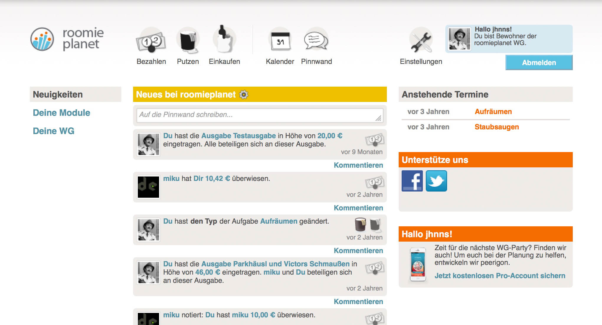

name: cover <img src="assets/img/peerigon.svg" style="height: 5vh; margin-top: 5vh; margin-bottom: -5vh;"> # Frontend management – yesterday, today and tomorrow? .slide-author[ Johannes Ewald<br> .small[@jhnns / johannes.ewald@peerigon.com]<br> <br> Richard Stromer<br> @noxan ] --- layout: true class: center, middle .slide-header-left[ Frontend management – yesterday, today and tomorrow? ] .slide-header-right[ Web&Wine ] --- ## Johannes - Co-Founder Peerigon GmbH - Open Source enthusiast - Teaching JavaScript at the University of Applied Sciences Augsburg --- <img src="assets/img/peerigon.svg" style="height:10vh; margin-bottom: 5vh;" /> - Web Consulting Company - Web / Mobile Web / Hybrid / Backends - JavaScript / Node.js - Trainings - Software Development --- ## Richard - Slide - about - Richard --- ## Agenda - How we used to manage our frontend: 4 examples of legacy web projects - Frontend management today - Optimizing page load time with Google PageSpeed - Frontend management tomorrow? --- ## Disclaimer Biased view of JavaScript developers ahead.<br> Experience may vary depending on your background. --- ## How we used to manage our frontend 4 examples of legacy web projects --- ### roomieplanet.com  --- <img src="assets/img/roomieplanet-techstats.jpg" style="position: absolute; left: 0; width: 100%; top: 20vh;"> - Server-side rendering with PHP and Smarty - Almost the same amount of code already on the client-side in JavaScript --- - 273 JS files (incl. external dependencies) - No dependency manager (aka `vendor` directory) - No real module system - [MooTools Packager](https://github.com/kamicane/packager) as build tool - Minified via [jsmin.php](https://github.com/rgrove/jsmin-php/) --- <img src="assets/img/roomieplanet-js-repos.jpg" style="width: 50vw;"> - All JS code is split into 5 repositories each providing a `package.yaml` --- <img src="assets/img/roomieplanet-js-annotations.jpg" style="width: 50vw;"> - Every file contains imports and exports --- <img src="assets/img/roomieplanet-js-builds.jpg" style="width: 50vw;"> - `build.php` responsible for building (and caching) JS builds - One file for common JS code + one file per page --- <img src="assets/img/css.jpg" style="width: 10vw;"> - A single `main.css` for all pages - No preprocessor - No minifier --- - No assets/file handling - No image compressor --- ### example2.com TODO @noxan --- ### example3.com TODO @jhnns --- ### example4.com TODO @noxan --- ## Frontend management today TODO @jhnns --- ## Optimizing page load time with Google PageSpeed TODO @noxan --- ## Frontend management tomorrow? TODO @jhnns --- ## Thank you Johannes Ewald<br> @jhnns<br> johannes.ewald@peerigon.com<br> <br> Richard Stromer<br> @noxan